arXiv 2610.31329 · cs.CV · 视觉-语言模型 / 感知 · v2 2026 年 10 月 24 日 · 技术报告 · 中文精读
WeVisOne-VL: Unified Visual Perception from Objects to Pixels
作者 Tianming Liang、Junyi Pan、Yuxi Li（三人共同一作）、Canmiao Fu、Zhipeng Huang、Chong Sun（项目负责人）、Chen Li（通讯作者）、Jing Lyu，来自 WeChat Vision, Tencent Inc.（微信视觉）。
关于这份精读。这篇论文在 arXiv 上以 CC BY 4.0 发布（v1 2026-10-22，v2 2026-10-24，两版 PDF 同为 32,841 KB；这里读的是 v2）。PDF 里没有找到 “All rights reserved” 之类和它矛盾的声明。这里按原文顺序覆盖正文 9 节和附录 A、B，小节编号和原文一致，用自己的话整理，不是逐字翻译。公式按原文编号，表格数字照录原文。
图 1 到图 13 从 arXiv PDF 裁切，作者是 Tianming Liang 等，许可 CC BY 4.0，只做了裁切、缩放和格式转换，没有改内容。“看原图”链接到 arXiv HTML 版对应的图。表 1 原文是六个环形图，这里改写成表格（数字照录）。图下的文字是我写的。“读者注”是整理时核算或对照的结果，不属于论文内容，页尾有汇总。
代码。官方代码是 Tencent/WeVisOne-VL 提交 9a6bcd8（2026-10-25），Apache-2.0；LICENSE 文件开头另有腾讯惯用的一行 “Copyright (C) 2026 Tencent. All rights reserved.”，后面接 Apache-2.0 全文。另外看了 mask2alpha 分支（提交 2dfe851，2026-10-23，数据引擎里的抠图标注器）；这个分支里没有 LICENSE 文件，所以本页对它只引文件名和结构，不摘代码。两处都只读，没有运行。Hugging Face 上 2B、4B 两个模型的模型卡、config.json、tokenizer.json 和文件列表我读了，权重没有下载。
项目主页页脚写着 “© 2026 WeChat Vision, Tencent Inc. Code released under the Apache License 2.0”，没有给页面内容本身的许可。我只打开过一次看条款，没有抓取其中的图或数据，本页只链接它。Hugging Face Space 上的在线 demo 没有调用。
现有 VLM 做细粒度感知不可靠：会编出不存在的物体，看不懂陌生的描述，密集场景漏检。WeVisOne-VL（WeChat Vision All-in-One）把目标级任务（检测、指代定位、计数、指点、OCR）和像素级任务（指代分割、可提示抠图）都写成结构化的下一个 token 预测，再用一个特殊的 <OBJ> token 接一个约 9.6M 参数的像素解码器，输出二值掩码或连续 alpha。底座是 Qwen3-VL，做了 2B 和 4B 两个尺寸。
<0>…<1000>；目标不存在时写 None；像素任务在每个框的四个坐标后多生成一个 <OBJ>。读完我认为最值得记住的三点：一是像素解码器真的很小，4B 版按代码算正好 9,609,764 个参数，大头是可变形查询解码器和像素融合，精修头只有 0.44M（读者注 4）；二是公开的解码器只有一个，分割掩码就是 alpha 输出取 0.5 阈值，任务提示也和抠图共用（读者注 5）；三是拒答能力来自数据引擎专门构造并复核的“困难负样本”，加上 RL 里“无目标时什么都不输出才给 1 分”的奖励。
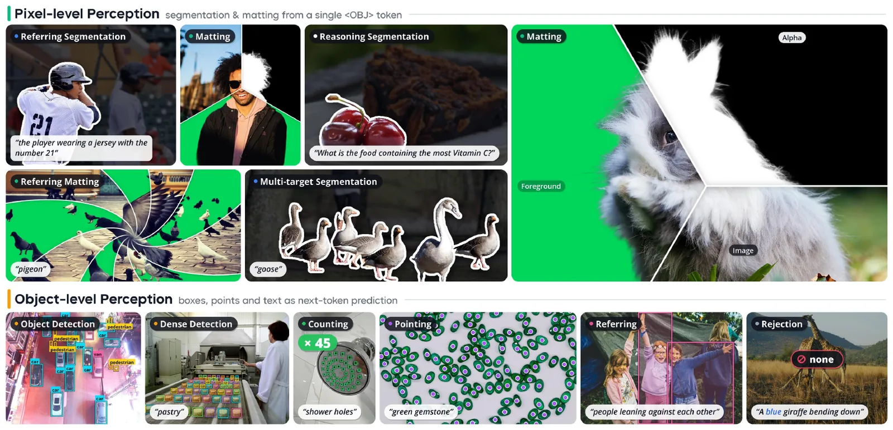
问题。一个视觉系统要回答三件事：图里有什么，用户说的是哪个，它在哪。从 YOLO、DETR 到 Grounding-DINO、SAM，再到大 VLM，模型能认的概念和能听懂的指令越来越多，但兼顾效果和效率时仍不够部署：会幻觉出不存在的物体，遇到不熟悉的描述会误解，不显眼的实例会漏掉。
做法。一个自然语言接口统一目标级和像素级感知。三块设计：
<0>…<1000> 编码归一化坐标（沿用 Rex-Omni 的做法）；像素任务在每个框后生成 <OBJ>，它的隐状态就是这个实例的表示，解码器把它和共享 ViT 的多层特征组合，在整张图上出结果。不需要另挂一个大分割模型。结果概览。和通用 VLM、专用视觉系统相比都有竞争力，拥挤场景召回高，目标不存在时能正确拒答。
结论先说：WDE 的核心是“检测器广撒网，VLM 做裁判”，并且一个实例的框、掩码、alpha 共用同一条查询，跨任务不丢身份。数据来自 GRIT、CC3M、LAION、SA-1B 和若干任务专用数据集，标注库超过 1 亿张图、约 36 亿个框。
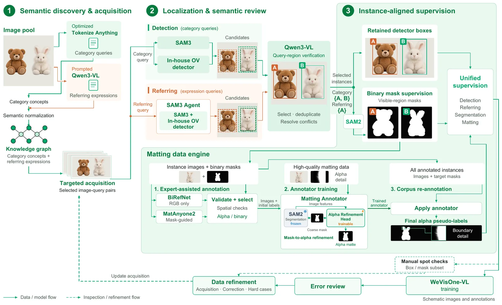
两类标注查询：检测用优化过的 Tokenize Anything 发现类别；指代任务让 Qwen3-VL 写出通过属性、状态、动作、关系来指定目标的表达。两类都放进一个共享知识图谱，图谱从 Wikipedia 和 WordNet 初始化，记录规范名、别名、分类关系和整体-部分关系。新词先通过文本检索和视觉-语言核验挂到已有节点上，只有视觉证据稳定时才加为新节点；规范化时合并同义类别，但保留限定指代范围的描述条件。
图谱也用来定向采集：概念名和别名作文本检索词，核验过的实例作视觉检索线索，历史错误指出哪里缺数据。采样优先级按概念覆盖、图像领域、目标尺度和困难条件（遮挡、密集排布）设定，易混类别和反复出错的指代也会加权。
传统检测器擅长密集物体但不认长尾和开放概念；VLM 认得出但密集场景召回低。所以先让检测器给出尽量全的候选，再用 VLM 做事后核验：SAM3 和一个自研的 DINO 结构开放词表检测器（迭代改进过）并行出候选，合并成一个候选池；Qwen3-VL 逐个判断区域是否符合类别查询，据此选择、去重、解决冲突。保留下来的实例用定位模型给的框（不是 VLM 的框），这些框既是检测监督，也确定后面分割标注的目标实例。
指代要求区域满足表达的组合含义。这一步基于 SAM3 Agent 框架，再把自研检测器加进来作另一个定位专家；两者在同一个以表达为条件的流程里出候选。Qwen3-VL 检查每个候选在图像上下文里是否符合表达里的属性、状态、动作、关系，并区分“要找的目标”和“只作为参照提到的物体”；指整体还是部件也由表达决定。结果把每条表达绑定到一个目标或一组目标。
对每个定位到的实例，用 SAM2 预测可见区域的二值掩码，掩码继承生成它的框的查询。于是同一实例在同一查询下既有框又有掩码：类别查询下分别监督检测和类别条件分割，指代表达下分别监督指代定位和指代分割。人工抽检一部分，查掩码和框是否连到对的实例、掩码是否准；问题交给 §2.7 的修正流程。每条标注都记录来源，方便追溯和重生成。
候选查询来自知识图谱里的易混概念、视觉相似类别、对描述条件的受控改动（例如“红车”改“蓝车”）和观察到的模型错误。负样本要人工确认：改成“蓝车”不代表图里没有蓝车，检测器什么都没找到也可能是漏检，所以每个候选负样本都要对照整张图检查属性、动作、关系，真有目标就送回正样本标注。
“困难”由当前模型决定：复核过的负样本，如果模型仍然预测出区域，就成为困难负样本。它的目标集合为空，教模型拒答而不引入任何框或像素目标；错误预测保留下来作为混淆的证据。困难正样本记录漏检、选错指代对象、拥挤或遮挡下难定位的情况。每个模型版本重新评估难度，采样重点跟着持续存在和新出现的失败模式调整。
结论先说：高质量 alpha 标注贵、量少；合成到新背景又有光照和边界不自然的问题。已有的实例标注知道目标是谁、在哪，只缺连续的 alpha。所以分三步：专家辅助标注、训练专用标注器、用标注器重标全库，alpha 始终挂在原来的描述和框上。
专家辅助标注。对每个带二值掩码 \(S\) 的实例，在同一裁剪上取两个候选：BiRefNet 的软前景 \(\alpha_B\)，以及 MatAnyone2 的 alpha \(\alpha_M\)。MatAnyone2 用膨胀、腐蚀后的 \(S\) 初始化，把裁剪图重复成一小段视频，取 warm-up 之后的最后一帧。BiRefNet 只看 RGB、没有实例提示，可能抠到别的物体或只抠一部分，所以只用它的二值化前景 \(B=\mathbb 1[\alpha_B\ge\tau_\alpha]\)（\(\tau_\alpha=0.5\)）检查和 \(S\) 的空间一致性。BiRefNet 候选必须同时满足：
通过后，只保留 \(\alpha_B\ge0.01\) 的连通块中至少 10% 面积落在稍微膨胀过的 \(S\) 里的那些；块内 alpha 不按 \(S\) 截断，细结构可以伸出粗边界。BiRefNet 被拒或过滤后前景不足 8 个像素时，如果 \(\mathrm{IoU}(\mathbb 1[\alpha_M\ge\tau_\alpha],S)\ge0.9\) 就退回用 \(\alpha_M\)，否则保留 \(S\)。每个实例记录用了哪个来源（包括 MatAnyone2 因裁剪太小或推理失败退回 \(S\) 的情况），以区分模型预测和二值退化。
只要 \(\mathrm{IoU}(B,S)\ge0.5\)，覆盖率 ≥ 0.5 和面积比 ∈ [0.5, 2] 就自动成立。记 \(I=|B\cap S|\)、\(U=|B\cup S|\)，有 \(U\ge|S|\)、\(U\ge|B|\)：
同理 IoU ≥ 0.5 也推出前景精度 ≥ 0.5，但论文要求 0.8，这一条更严，不多余。真正起额外作用的是 \(|B|\ge8\)、精度 ≥ 0.8、外接框 IoU ≥ 0.7 和质心偏移。举例：\(|S|=1000\)、\(|B|=1100\)、\(I=900\)，则 IoU = 900/1200 = 0.75，覆盖率 0.9，精度 0.818，面积比 1.1，前四条都过；若 \(B\) 再多出 100 个不重叠像素，精度降到 0.75 就被拒，IoU 仍有 0.692。动画第 3 幕可以拖着试。
训练抠图标注器。按 1:1 抽“带初始标签的实例”和“高质量抠图数据”，兼顾覆盖面和 alpha 细节。受 SAM2Matting 启发，冻结一个 SAM2.1-Base+，加一个新的轻量 alpha 精修头：融合多尺度图像特征、在每个解码阶段注入的提示掩码、浅层 RGB 分支的局部细节，自顶向下直接出 alpha。训练时提示掩码有四种来源：目标 alpha 二值化、实例分割掩码、对它们的随机扰动、用框提示 SAM2 分割。损失是多尺度 L1 和拉普拉斯 alpha 损失、前景/背景监督，加一个只对未扰动的物体级提示计算的提示一致性项；对有连续 alpha 标签的样本再加过渡区损失（小目标除外）。
全库重标。训练好的标注器用已有实例标注指定目标，对训练库里所有标注实例出 alpha，替换初始标签，作为 §4 抠图训练的最终伪标签。
仓库 mask2alpha 分支（2dfe851）就是这个标注器的推理版。对得上的：冻结 SAM2.1-B+（mask2alpha/model.py 里 SAM2AlphaRefiner 继承 SAM2 的 SAM2Base，加载官方 sam2.1_hiera_base_plus.pt 并校验 SHA256）；头 RefineMattingHead（matting_head.py）取 SAM2 的三层特征（步长 4、8、16），每一级都拼进按尺寸缩放的提示掩码，另有一个吃“RGB + 提示”4 通道的两级浅层 stem，自顶向下在步长 8、4、2 各出一个 alpha，最后一级当输出。
我按它的通道配置（特征 32/64/256，宽度 32/64/128/256，stem 32/64）数了参数：3,910,851 个（卷积无偏置 + BatchNorm 仿射 + 三个 1×1 输出层），按 fp32 是 15.64 MB；仓库里 weights/mask2alpha_sam2_bplus.pt 是 15,699,010 字节，差的约 0.06 MB 正好够放 BatchNorm 的滑动统计和文件头。推理支持掩码、框、点三种提示，框和点先让 SAM2 出掩码。训练代码、损失和数据都没有公开。论文没给这个头的参数量。
每轮训练后按概念、图像领域、目标尺度、遮挡、任务、失败类型整理错误，聚类去重后挑代表性样本复核。复核区分“模型错”和“标注错”：标注可靠就不改，可能加大采样权重或作为相关图像的检索种子；标注有缺陷才修正或重生成，再进下一版数据。也就是说，模型和标注不一致只触发调查，标注只在复核后才改。不同失败对应不同更新：漏检 → 加采集和困难正样本；指代混淆 → 实例对比和更具体的描述；误报 → 构造困难负样本；框、掩码、跨任务关联有缺陷 → 退回对应标注阶段。
每次数据发布都记录标注来源、暴露错误的模型版本、复核和修订历史；没解决的样本不进训练。原图、它的近重复图和派生的任务记录在各版本里留在同一个数据划分。一个固定的监控集只做内部回归，不进训练也不用于阈值标定；正式基准和训练、和反馈驱动的数据构造都隔离。
两处扩展：任务格式上加坐标 token 和任务标签 token，输出紧凑；结构上加一个轻量解码器，把离散 token 的表示变成分割和抠图的稠密输出。
所有任务都是结构化的下一个 token 预测。参考 Rex-Omni 和 LocateAnything，加入 <0> 到 <1000> 共 1001 个 token 表示归一化坐标。模型依次生成对象引用和坐标：框是 \([x_0,y_0,x_1,y_1]\)，点是 \([x_0,y_0]\)；目标不存在时坐标字段写 None。分割和抠图在每个框的四个坐标后、同一个 <box> 字段里紧接着生成一个 <OBJ>，给像素解码提供目标表示。
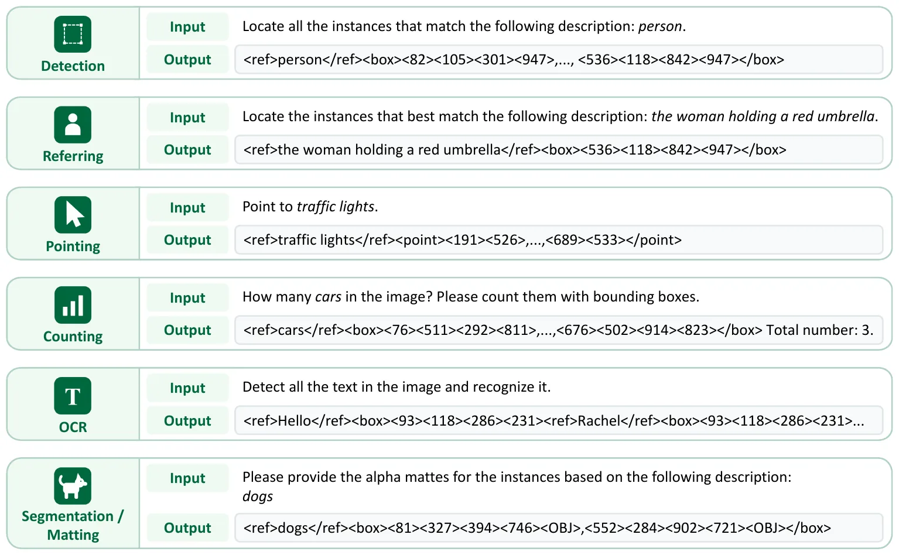
<ref>名称</ref> 加 <box> 或 <point> 里的坐标 token 组成；计数在框后写 “Total number: 3.”；抠图在每个框后多一个 <OBJ>。一个抠图请求的输出（取自图 3）：
<ref>dogs</ref><box><81><327><394><746><OBJ>,<552><284><902><721><OBJ></box>
两只狗，每只 4 个坐标 token 加 1 个 <OBJ>。坐标是千分比：第一只狗左上角在宽度的 8.1%、高度的 32.7%。
tokenizer.json：id 151669–152669 是 <0>…<1000>（1001 个），152670–152677 是 <ref>、</ref>、<box>、</box>、<point>、</point>、<polygon>、</polygon>，152678 是 <OBJ>。<polygon> 论文没提；解析和可视化代码的正则能识别它，但 11 个任务的提示词里没有一个要求输出多边形。wevisone_vl/prompts.py：指代是 “Locate the instances that match …”（图 3 多一个 best）；指点是 “point to: …”（图 3 是 “Point to …”）；计数是 “… Please count them with boxes.”（图 3 是 bounding boxes，评测脚本用的才是 bounding boxes）；OCR 是 “detect all the word in the box format”（图 3 是 “Detect all the text in the image and recognize it.”）；分割和抠图共用一句 “Locate the instances that match the following description and provide the alpha mattes: …”。评测脚本 evaluation/utils/prompt_builder.py 又有一套：RefCOCOg、DVGBench、Ref-L4 用 “Locate a single instance that best matches …”。我没法判断训练时用的是哪一套，按代码用最稳。visual_prompt：给参考框，找“相似物体”。论文和 README 的任务表都没写。<93><118><286><231>，第一个词后面也没有 </box>，像是排版时复制出的笔误。图 5–12 里模型名印成 “WeVisionOne-VL”，也是笔误。图像和指令进来，Qwen3-VL 视觉编码器编码图像，语言模型自回归生成上面的结构化回复。像素任务对每个生成的 <OBJ> 调一次轻量解码器，输入三样：这个 token 的隐状态、它前面的预测框、Qwen3-VL 视觉编码器的多层特征。图像上下文来自共享的视觉特征，空间引导来自框，所以不需要 SAM 这样的独立大分割模型。
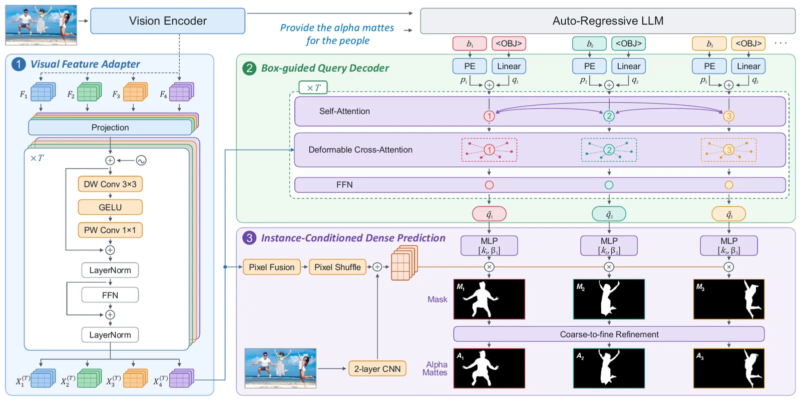
<OBJ> 隐状态经线性层得到内容查询 \(q_i\)，框 \(b_i\) 经位置编码得到 \(p_i\)，经 \(T\) 层自注意力、可变形交叉注意力、FFN，得到 \(\tilde q_i\)。③实例条件稠密预测：像素融合和 pixel shuffle 得到像素特征，加上原图经两层 CNN 的浅层特征；MLP 从 \(\tilde q_i\) 生成动态核 \([k_i,\beta_i]\)，和像素特征相乘得到掩码 \(M_i\)，再经由粗到细精修得到 alpha \(A_i\)。三部分：视觉特征适配器把 ViT 中间层组织成共享的多层记忆；可变形查询解码器把每个 <OBJ> 表示和它的框先验结合；实例条件稠密预测把更新后的查询和视觉特征变成整张图的预测。分割和抠图共用这三部分，抠图另加一个轻量精修模块处理细边界和半透明。整个解码器（含精修模块）约 9.6M 参数。
为保留细粒度信息，从 ViT 中间层取 \(L\) 个合并前（pre-merging）的特征 \(\{F_l\in\mathbb R^{C\times H_p\times W_p}\}_{l=1}^L\)。每层映射到 \(d\) 维，并加位置和层级信息：
\(W_l\in\mathbb R^{d\times C}\) 是可学习投影，\(P_{2D}\) 是二维位置编码，\(e_l\) 是可学习的层级嵌入。适配器有 \(T\) 个块，第 \(t\) 块：
最后各层 \(X^{(T)}_l\) 沿空间展平后拼接，得到视觉记忆 \(\mathcal M\in\mathbb R^{LH_pW_p\times d}\)。
代码里的具体值（configs/wevisone_vl_v1_decoder.json）：取 ViT 第 5、11、17、23 层（共 24 层，从 0 数），\(L=4\)，\(d=192\)，\(T=3\)，FFN 768。前三层正好是 Qwen3-VL 的 DeepStack 合并器的输入，第 23 层是最终合并器的输入，代码用 forward pre-hook 在合并器前截取，并把 Qwen 按 2×2 块打乱的 patch 顺序还原成行优先（feature_bridge.py）。四层的网格都是 \(H_p\times W_p\)（16 像素一个 patch），分辨率相同。
沿用 Deformable DETR 的解码器，区别在实例查询的初始化：不用静态的可学习嵌入，而直接从 VLM 输出实例化。回复里有 \(N\) 个实例，第 \(i\) 个的 <OBJ> 隐状态记 \(h_i\)，归一化框 \(b_i=[x_{i1},y_{i1},x_{i2},y_{i2}]\)。内容查询 \(q_i=W_hh_i\)，位置查询 \(p_i=\mathrm{MLP}(\phi(b_i))\)，\(\phi\) 是 Fourier 编码。
六个可变形块，每块是自注意力、多尺度可变形交叉注意力、FFN。自注意力里 \(N\) 个实例查询互相交流，\(q_i+p_i\) 同时当 query 和 key，\(q_i\) 当 value。交叉注意力里每个查询以参考框 \(r_i=[\tfrac{x_{i1}+x_{i2}}2,\tfrac{y_{i1}+y_{i2}}2,x_{i2}-x_{i1},y_{i2}-y_{i1}]\) 为条件，从记忆 \(\mathcal M\) 里做多尺度可变形采样。
自己画的 · 11 幕 3D 框架动画
数据引擎 → 抠图准则 → 任务格式 → 视觉特征 → 查询解码器 → 像素融合 → 由粗到细 → 训练课程 → RL 奖励 → 结果。下面嵌的是第 6 幕（框引导查询解码器，采样点按代码的初始化当场算）。层宽、层数来自官方代码和 config；图像、框、采样偏移是示意。
多层像素融合。深层特征有语义，浅层特征保留空间细节。适配后的特征自顶向下融合：
为了找回融合特征里丢掉的颜色、纹理、边缘，再把输入图 \(I\) 缩放到 1024×1024，过一个两层 CNN 得到浅层特征；把 \(G_1\) 上采样到同样的 512×512，逐元素相加：
动态掩码头。\(\tilde q_i\) 是查询解码器输出的第 \(i\) 个实例表示。一个 MLP 从它生成实例专属的动态核，作用在 \(P\) 上得到逐像素 logit：
由粗到细精修。单次掩码预测对细结构和半透明边界不够。从 \(M^{(0)}_i=M_i\) 开始，经三个上采样阶段 \(j=1,2,3\) 逐步精修。第 \(j\) 阶段把上一阶段特征 \(F^{(j-1)}_i\) 上采样，和缩放后的原图、像素特征、之前的掩码预测 \(C^{(j)}_i\) 拼接：
Up 是转置卷积，\(\mathrm{Interp}_j\) 是双线性插值到第 \(j\) 阶段的分辨率，\(\|\) 是通道拼接。然后用实例查询做通道级的缩放和平移，经残差卷积块 \(f^{(j)}_{rc}\) 预测 logit 残差：
输出 \(A_i=\mathrm{Sigmoid}(M^{(3)}_i)\)。
按 wevisone_vl/mask_decoder.py 的结构和 config（\(d=192\)、掩码特征 64、Fourier 32 个频率、适配器 3 块、解码器 6 层 8 头、4 层 × 4 点、FFN 768、精修 48 通道 × 每级 2 个残差块），视觉输入 1024 维（两个模型的 ViT 宽度都是 1024），我自己写脚本逐层数了一遍（没有调用仓库代码）：
| 部分 | 4B | 2B | 主要来源 |
|---|---|---|---|
| 视觉特征适配器 | 1,794,432 | 1,794,432 | 四个 1024→192 投影 787,968；3 个块各 335,232 |
| 查询构造 | 578,880 | 480,576 | \(W_h\)：LLM 宽度 × 192 + 192（2560 或 2048）；Fourier MLP 86,400 |
| 框引导查询解码器 | 3,560,832 | 3,560,832 | 每层 593,472：自注意力 148,224、可变形注意力 148,224、FFN 295,872 |
| 像素融合（含两层 CNN） | 3,184,896 | 3,184,896 | 第一个 pixel shuffle 卷积 192→768 一项就 1,327,872 |
| 动态掩码头 | 49,601 | 49,601 | MLP 192→192→65 |
| 由粗到细精修 | 441,123 | 441,123 | 三级，48 通道 |
| 合计 | 9,609,764 | 9,511,460 | 张量 296 个 |
4B 的合计和 configs/wevisone_vl_v1_decoder.json 里的 "parameters": 9609764、"state_dict_tensors": 296 完全一致。2B 的语言模型宽 2048，只有 \(W_h\) 一项不同：少 \((2560-2048)\times192=98{,}304\) 个参数。Hugging Face 上的文件大小印证了这一点：mask_decoder.pt 4B 是 38,534,741 字节，2B 是 38,141,525 字节，差 393,216 = 98,304 × 4（fp32）；两者扣掉参数后剩下的文件头都是 95,685 字节。
所以两处写法不准：2B 的模型卡也写 “mask_decoder.pt (9,609,764 parameters)”，那是 4B 的数；仓库只有一份 config，scripts/verify_checkpoint.py 会拿 9,609,764 去校验，按上面的算术 2B 的 sidecar 过不了这个检查（我没有运行，我的推断）。推理不受影响：engine.py 用实际的 LLM 宽度建解码器再严格加载。“约 9.6M”对 4B 准确，2B 是 9.5M。
Conv2d(1024,192,1) + GroupNorm(32,192)）；\(P_{2D}\) 是 DETR 式正余弦编码。式 (2) 和代码一致。SameScaleMSDAEncoder、SameScaleFPN，并检查四层尺寸相同）。可变形注意力的 4 个 level 是 4 个深度，不是 4 个分辨率。LayerNorm(Linear(h_i))（有偏置和归一化）；\(p_i\) 也过一个 LayerNorm。\(h_i\) 取自语言模型最后一个解码层的输出（hook 在最后一层上，早于最终的 RMSNorm）。msda.py 的 reset_parameters）。FullCanvasAlphaCascadeHead。prompts.py 里分割和抠图的提示词也一样。评测脚本把它取 0.5 阈值当分割掩码。论文表 7 的分割数字是不是用这个抠图微调后的解码器测的，论文没说，未核实。forward 里 self.float() 并关掉 autocast）。结论先说：三阶段 SFT 先建立统一的输出接口，再提高分辨率和密度，最后把自回归定位接到像素预测上；像素解码器单独 warm-up，最后单独微调成抠图；之后的 RL 直接优化整条回复的定位质量，而不是单个 token 的似然。
表 1 · 训练数据组成（原文是六个环形图，这里改成表格，数字照录；“我核”一列是用表 9、表 10 反算的）
| 阶段 | 样本 | 组成 | 我核 |
|---|---|---|---|
| SFT 阶段 1 | 90.2M | 检测 67.2%、指代 20.1%、计数 2.7%、指点 3.1%、OCR 2.3%、描述 3.0%、分割 1.7% | 表 9：60.6/90.2 = 67.2%，18.1/90.2 = 20.1% …全对 |
| SFT 阶段 2 | 40.5M | 检测 66.4%、指代 18.8%、计数 3.0%、指点 2.2%、OCR 1.7%、描述 2.2%、分割 5.7% | 26.9/40.5 = 66.4%，2.3/40.5 = 5.7% …全对 |
| 分割 warm-up | 250M | 公开 37.3%、WDE 62.7% | 表 10 分割池 171.4/459.8 = 37.3%（池子 459.8M，warm-up 用 250M） |
| SFT 阶段 3 | 41.8M | 检测 37.3%、指代 6.2%、计数 1.4%、指点 1.0%、OCR 0.7%、描述 1.0%、分割 52.4% | 15.6/41.8 = 37.3%，21.9/41.8 = 52.4% …全对 |
| 抠图微调 | 130M | 公开 0.2%、WDE 99.8% | 表 10：0.3/130.1 = 0.23%；但附录 A.2 说每批按 1:4 抽（读者注 6） |
| RL | 178K | 检测 44.0%、密集检测 20.8%、指代 17.5%、OCR 7.9%、分割 5.8%、指点 4.0% | 合计 100.0% |
阶段 1：任务对齐。从扩了词表的 Qwen3-VL 出发，冻结视觉编码器和视觉-语言投影，只训语言模型，9,000 万条覆盖所有任务的样本，13K 步。模型学会按不同指令输出结构化结果，目标不存在时返回 None。像素任务的样本只做下一个 token 预测（NTP），不激活像素解码器，先建立“每个预测实例 ↔ 它的 <OBJ>”的对应。每张图 16–512 个视觉 token，上下文 4,096。早期训练容易被极密集的样本（一条回复几百个框）主导，模型很容易陷入重复输出，所以这一阶段主要用每类不超过 50 个框或点的样本。
阶段 2：分辨率和密度扩展。解冻视觉编码器、投影和语言模型。最大输入提高到 1,960 个视觉 token，保住小目标细节；每条回复最多 500 个框或点，见识拥挤场景；上下文 8,192。约 4,000 万条样本、9K 步。像素样本仍只做 NTP。
阶段 3：token 和像素交替优化。目标是让 <OBJ> 成为 VLM 和像素解码器之间的桥。先把阶段 2 的 VLM 和随机初始化的解码器一起在 2.5 亿条分割样本上训 100K 步（warm-up）：
focal 项强调前景背景不平衡下的难像素，Dice 项直接优化掩码重叠。warm-up 后只保留解码器权重和学到的 <OBJ> 嵌入，接回原来的阶段 2 检查点（warm-up 期间更新过的其他 VLM 权重丢掉），再联合训练 VLM 和解码器 9,000 步。为保住定位能力，NTP 和像素任务按 1:1 交替：
交替训练之后，冻结 VLM，把解码器专门化为连续 alpha 预测：1.3 亿条抠图样本、100K 步。按抠图的常规做法组合 L1、梯度、拉普拉斯损失，再加一个强调难前景/背景像素的 \(\mathcal L_{\rm hard}\)：
SFT 的 token 级似然不能直接优化任务奖励，所以在一个按不确定性筛过的语料上做混合任务 RL。
按不确定性挑样本。GRPO 靠组内相对优势提供信号。RL 之前用 SFT 模型对每个候选提示 \(x\) 采一组回复、算奖励，组内均值 \(\mu_x\)、标准差 \(\sigma_x\)：
它偏好中等难度、奖励方差大的样本：有时成功有时失败，相对优势信号强，RL 更高效。按这个分数选出约 14 万条，再补一些定向的框监督样本和指点数据，共 17.8 万条（任务分布见表 1）。
带定位奖励的 GRPO。奖励在完整的结构化回复上算。每个图像-提示对 \(x\) 从当前策略采 \(G=8\) 条回复，每条解析成一组预测物体。\(\hat B_i\)、\(B^*\) 是预测框集合和真值框集合，在每个语义类内部做一对一匈牙利匹配，匹配对的集合记 \(\mathcal M_i\)：
它衡量定位质量，同时惩罚漏检和重复。IoU 取三次方让奖励在高 IoU 区更敏感，鼓励更准的框。分割和抠图在 RL 里也只用框的奖励，不评价掩码或 alpha。指代分割的预测只有框后跟着 <OBJ> 才算有效。负样本只有在模型什么都不预测时奖励才是 1。
<OBJ> 的隐状态会跟着漂移，而解码器没有再适配；论文没讨论这一点，顺序本身也未核实。五个目标级任务（检测、指代检测、计数、指点、OCR）和两个像素级任务（指代分割、抠图）。推理用温度 0 的贪心解码，每张图最多 1,960 个视觉 token。主要对比 Qwen 系列（Qwen3-VL 用 Instruct 版；Qwen3.5 开 thinking，因为在他们的评测里更好）和两个 VLM 定位模型 Rex-Omni、LocateAnything。
按正文和表 2–8 数不重复的基准：检测 4（COCO、LVIS、Dense200、VisDrone）；指代 8（RefCOCOg、RefCOCOg-Rej、WeRef-Bench、PR-Bench、HumanRef、Ref-Adv、DVGBench、Ref-L4）；计数 5；指点 2（PointBench、PixMo-Points，另外四个复用检测集）；OCR 4；指代分割 4（RefCOCO、RefCOCO+、ReasonSeg、Ref-ZOM，RefCOCOg 已算过）；抠图 4（P3M-500-NP、AM-2K、PPM-100、WeRefMat）。合计 4 + 8 + 5 + 2 + 4 + 4 + 4 = 31，其中 WeRef-Bench、WeRefMat 是自建的，还没公开。
基准。常规检测 COCO（论文），长尾检测 LVIS（论文），密集和小目标 Dense200（Rex-Omni 提出，论文）和 VisDrone。指标。AP 需要校准过的置信度，生成式 VLM 给不了，所以和 Rex-Omni、LocateAnything 一样报 F1：预测框和同类、尚未匹配的真值框 IoU 超过阈值算真阳性；按类别算精度和召回再平均，F1 是二者的调和平均。报 IoU = 0.5、0.95 和 0.5:0.05:0.95 的平均（Mean）。
结果。4B 在四个集的 Mean 上都超过同规模 VLM，Dense200 和 VisDrone 上优势最大；IoU = 0.95 也强，说明不只是覆盖全，框也准。
表 2 · 检测 F1（%）。COCO、LVIS 是零样本
| 方法 | COCO | LVIS | Dense200 | VisDrone | ||||||||
|---|---|---|---|---|---|---|---|---|---|---|---|---|
| 0.5 | 0.95 | Mean | 0.5 | 0.95 | Mean | 0.5 | 0.95 | Mean | 0.5 | 0.95 | Mean | |
| GroundingDINO-T（专用） | 69.8 | 23.0 | 56.6 | 47.7 | 22.7 | 38.8 | 36.9 | 19.7 | 33.1 | 55.2 | 3.9 | 38.5 |
| Qwen3-VL-2B | 62.9 | 13.1 | 45.2 | 58.5 | 17.8 | 40.8 | 14.7 | 1.8 | 10.0 | 37.0 | 1.5 | 23.1 |
| Qwen3-VL-4B | 66.6 | 14.9 | 48.7 | 61.3 | 19.5 | 44.0 | 20.9 | 3.7 | 15.2 | 49.5 | 1.8 | 31.0 |
| Qwen3-VL-8B | 65.9 | 14.8 | 47.8 | 59.7 | 19.6 | 42.9 | 19.5 | 2.9 | 13.8 | 47.7 | 2.0 | 29.5 |
| Qwen3.5-4B | 67.6 | 12.9 | 48.2 | 61.1 | 17.8 | 42.2 | 28.4 | 2.3 | 18.9 | 50.3 | 1.3 | 29.9 |
| Qwen3.5-9B | 68.9 | 13.8 | 49.5 | 62.2 | 19.4 | 43.7 | 26.2 | 2.5 | 18.0 | 51.0 | 1.4 | 31.3 |
| Rex-Omni-3B | 72.0 | 15.9 | 52.9 | 64.3 | 20.7 | 46.9 | 78.4 | 10.3 | 58.3 | 61.6 | 1.5 | 35.8 |
| LocateAnything-3B | 70.1 | 19.3 | 54.7 | 62.3 | 31.1 | 50.7 | 74.0 | 18.5 | 58.7 | 63.0 | 3.2 | 39.9 |
| WeVisOne-VL-2B | 72.6 | 18.7 | 55.2 | 69.5 | 27.5 | 53.3 | 79.1 | 14.1 | 61.4 | 64.5 | 2.8 | 40.4 |
| WeVisOne-VL-4B | 74.0 | 19.5 | 57.1 | 71.1 | 28.8 | 55.3 | 86.9 | 23.2 | 71.3 | 68.1 | 3.9 | 44.7 |
基准。公开的 RefCOCOg（论文）、HumanRef（论文）、Ref-Adv（用 Ref-Adv-s 划分）、PR-Bench、DVGBench、Ref-L4（论文）；RefCOCOg-Rej（GroundingME 构造）里每条改过的表达在图中都没有对应物体。另有自建的 WeRef-Bench：2,880 条中英文查询，含单目标、多目标、无目标三类，比只有单目标正样本的公开基准更难、更贴近实际。指标。多数报 F1 Mean；RefCOCOg-Rej 报拒答率（不出任何框才算对）；WeRef-Bench 和 PR-Bench 同时报 F1 Mean 和拒答率。
结果。单目标、多目标、无目标三种设置都超过现有 VLM；拒答差距最大：RefCOCOg-Rej 上 4B 67.4%，最好的基线 Qwen3-VL-8B 22.5%，两个定位专用模型都不到 1%。
表 3 · 指代检测（F1 Mean，%；Rej 是无目标查询的拒答率，%）
| 方法 | RefCOCOg | WeRef-Bench | PR-Bench | HumanRef | Ref-Adv | DVG | Ref-L4 | ||||
|---|---|---|---|---|---|---|---|---|---|---|---|
| val | test | Rej | Mean | Rej | Mean | Rej | |||||
| GroundingDINO-T（专用） | 45.9 | 46.8 | 0.0 | 21.1 | 14.7 | 25.2 | 0.0 | 25.2 | 19.7 | 24.1 | 23.1 |
| Qwen3-VL-2B | 70.8 | 71.0 | 1.7 | 30.8 | 22.8 | 41.6 | 4.3 | 63.2 | 34.7 | 35.2 | 67.9 |
| Qwen3-VL-4B | 74.1 | 74.3 | 18.8 | 46.3 | 61.9 | 49.9 | 10.8 | 69.4 | 44.4 | 42.4 | 72.5 |
| Qwen3-VL-8B | 74.6 | 74.9 | 22.5 | 36.7 | 18.3 | 50.3 | 7.1 | 71.6 | 45.0 | 43.4 | 72.4 |
| Qwen3.5-4B | 73.3 | 73.5 | 18.9 | 48.1 | 71.6 | 49.6 | 8.7 | 75.8 | 44.2 | 40.2 | 70.4 |
| Qwen3.5-9B | 74.3 | 74.6 | 15.2 | 50.7 | 70.7 | 50.8 | 8.3 | 77.8 | 47.3 | 42.5 | 72.0 |
| Rex-Omni-3B | 73.6 | 74.3 | 0.5 | 50.3 | 43.3 | 42.7 | 0.2 | 79.9 | 40.9 | 33.2 | 65.2 |
| LocateAnything-3B | 76.7 | 77.6 | 0.6 | 51.7 | 73.0 | 44.5 | 0.2 | 78.7 | 43.5 | 34.7 | 74.3 |
| WeVisOne-VL-2B | 77.1 | 78.2 | 50.2 | 73.2 | 92.9 | 49.8 | 37.0 | 77.4 | 43.6 | 40.8 | 75.1 |
| WeVisOne-VL-4B | 80.8 | 81.8 | 67.4 | 78.7 | 96.4 | 54.1 | 52.6 | 80.7 | 50.5 | 45.2 | 78.1 |
基准。CountQA 和 PixMo-Count（论文）是自然图像计数；CLOC 测跨域泛化；KubriCount 在受控干扰物下考多粒度的目标指定；MixCount 考混合物体场景里的细粒度开放词表计数。指标。通过检测输出的模型以框数为计数；直接给数的模型从回答里抽数字。报精确匹配准确率，差一个也算错。
结果。4B 在每个基准、每个划分上都是最高：PixMo-Count val/test 93.7%/89.6%，MixCount val/test 42.0%/40.4%。
表 4 · 计数精确匹配准确率（%）
| 方法 | CountQA | PixMo-Count | CLOC | KubriCount | MixCount | ||||
|---|---|---|---|---|---|---|---|---|---|
| val | test | val | test | testA | testB | val | test | ||
| Grounding DINO-T（专用） | 9.6 | 44.8 | 48.3 | 12.4 | 9.5 | 5.2 | 6.5 | 1.7 | 2.8 |
| Qwen3-VL-2B | 20.4 | 61.3 | 60.4 | 16.3 | 15.3 | 4.3 | 7.8 | 1.8 | 2.7 |
| Qwen3-VL-4B | 29.2 | 69.6 | 65.6 | 19.7 | 18.6 | 7.1 | 12.1 | 3.5 | 4.3 |
| Qwen3-VL-8B | 22.4 | 68.2 | 59.4 | 18.5 | 17.2 | 6.6 | 10.8 | 3.2 | 3.5 |
| Qwen3.5-4B | 40.0 | 80.6 | 76.9 | 21.1 | 21.7 | 10.0 | 16.2 | 3.9 | 5.2 |
| Qwen3.5-9B | 41.6 | 82.6 | 80.4 | 23.1 | 22.4 | 11.9 | 19.1 | 5.8 | 7.0 |
| Rex-Omni-3B | 37.6 | 82.2 | 71.9 | 19.0 | 22.3 | 13.5 | 18.8 | 9.9 | 11.4 |
| LocateAnything-3B | 52.4 | 88.7 | 82.8 | 22.8 | 23.9 | 18.5 | 22.4 | 12.5 | 15.2 |
| WeVisOne-VL-2B | 47.9 | 90.9 | 88.1 | 27.5 | 26.9 | 29.5 | 32.4 | 30.1 | 32.2 |
| WeVisOne-VL-4B | 57.1 | 93.7 | 89.6 | 28.2 | 28.3 | 37.7 | 40.1 | 42.0 | 40.4 |
基准。两个专门的指点基准 PointBench（PointArena 的一部分，论文）和 PixMo-Points（论文），另按 Rex-Omni 的协议在 COCO、LVIS、Dense200、VisDrone 上测指点。指标。点落在对应真值掩码里（没有掩码时用框）算对；每个目标最多一个真阳性，重复点降低精度，漏掉降低召回；报 F1@Point。检测集先按类别平均精度和召回。
结果。PointBench 和 PixMo-Points 都是最好；在检测集上也很强，但不是每列第一：Dense200 上 LocateAnything 87.6 略高于 4B 的 87.0，COCO 上 2B 的 85.8 高于 4B 的 85.4。
表 5 · 指点 F1@Point（%）
| 方法 | PointBench | PixMo-Points | COCO | LVIS | Dense200 | VisDrone |
|---|---|---|---|---|---|---|
| Qwen3-VL-2B | 61.2 | 62.1 | 72.7 | 61.9 | 29.5 | 35.7 |
| Qwen3-VL-4B | 57.1 | 71.3 | 74.5 | 65.8 | 37.7 | 45.6 |
| Qwen3-VL-8B | 62.5 | 72.2 | 77.5 | 67.7 | 42.2 | 46.4 |
| Qwen3.5-4B | 61.5 | 59.2 | 72.7 | 62.4 | 7.4 | 38.3 |
| Qwen3.5-9B | 66.4 | 62.6 | 74.4 | 64.8 | 10.5 | 40.6 |
| Rex-Omni-3B | 69.9 | 72.9 | 80.5 | 70.8 | 82.5 | 58.9 |
| LocateAnything-3B | 56.9 | 68.6 | 83.9 | 76.6 | 87.6 | 60.4 |
| WeVisOne-VL-2B | 62.9 | 73.2 | 85.8 | 78.9 | 83.2 | 62.4 |
| WeVisOne-VL-4B | 71.9 | 74.7 | 85.4 | 79.5 | 87.0 | 64.4 |
基准。HierText（论文，密集文档文本）、ICDAR2015（偶发场景文本）、TotalText（论文，弯曲文本）、SROIE（论文，结构化小票）。指标。OCR 当作定位任务，识别出的文字就是类别标签：文字完全一致且框满足 IoU 阈值才算对，然后和检测一样算精度、召回、F1，报 0.5、0.95 和平均。
结果。4B 在四个集的 Mean 上都超过专用 OCR 系统 PP-OCRv5 和通用 VLM。2B 在 HierText Mean 上和 PP-OCRv5 打平（30.5），TotalText Mean 略低于 LocateAnything。
表 6 · OCR（文字定位加识别）F1（%）
| 方法 | HierText | ICDAR2015 | TotalText | SROIE | ||||||||
|---|---|---|---|---|---|---|---|---|---|---|---|---|
| 0.5 | 0.95 | Mean | 0.5 | 0.95 | Mean | 0.5 | 0.95 | Mean | 0.5 | 0.95 | Mean | |
| PP-OCRv5（专用） | 45.2 | 3.4 | 30.5 | 38.2 | 1.2 | 25.6 | 40.2 | 0.7 | 25.7 | 77.7 | 5.6 | 58.6 |
| Qwen3-VL-2B | 21.4 | 0.3 | 11.0 | 15.7 | 0.0 | 8.5 | 32.6 | 1.1 | 20.5 | 40.2 | 0.2 | 18.6 |
| Qwen3-VL-4B | 39.9 | 0.9 | 22.7 | 52.0 | 0.8 | 30.0 | 48.3 | 3.3 | 33.0 | 69.0 | 1.0 | 40.4 |
| Qwen3-VL-8B | 45.3 | 0.9 | 25.7 | 45.8 | 0.3 | 27.1 | 53.2 | 3.2 | 35.4 | 75.8 | 1.1 | 43.3 |
| Qwen3.5-4B | 14.4 | 0.4 | 8.0 | 17.4 | 0.1 | 7.8 | 28.8 | 0.6 | 16.6 | 14.7 | 0.0 | 7.1 |
| Qwen3.5-9B | 17.5 | 0.5 | 10.0 | 28.1 | 0.0 | 13.4 | 49.9 | 1.6 | 30.8 | 31.8 | 0.4 | 16.7 |
| Rex-Omni-3B | 45.9 | 1.4 | 28.0 | 45.2 | 0.3 | 28.1 | 56.6 | 3.9 | 40.6 | 72.0 | 1.5 | 44.8 |
| LocateAnything-3B | 39.2 | 4.1 | 29.4 | 37.8 | 0.3 | 24.1 | 58.9 | 5.1 | 43.3 | 52.8 | 3.4 | 40.3 |
| WeVisOne-VL-2B | 44.3 | 2.5 | 30.5 | 65.3 | 2.0 | 42.6 | 61.5 | 2.7 | 42.5 | 85.3 | 4.4 | 62.1 |
| WeVisOne-VL-4B | 51.6 | 5.3 | 39.0 | 69.1 | 2.3 | 47.8 | 70.1 | 6.9 | 52.0 | 87.4 | 7.3 | 68.1 |
给定图像和一句表达，预测被描述物体的二值掩码。基准。RefCOCO / RefCOCO+（论文）、RefCOCOg、ReasonSeg（LISA 提出，论文，隐式查询，要推理和常识）、Ref-ZOM（论文，表达可指零个、一个或多个目标）。指标。RefCOCO 系列和 Ref-ZOM 报累计 IoU（cIoU：全体样本的总交集除以总并集）；ReasonSeg 报 gIoU；Ref-ZOM 另报负表达的拒答率。
结果。4B 在 RefCOCO 系列每个划分上都超过所有基线；不带显式思维链也在 ReasonSeg 上明显领先（val 71.2 对 LISA 的 65.0）。Ref-ZOM 显示现有分割模型目标不存在时也会出掩码，UniPixel 拒答率只有 0.3%，4B 是 86.0%。注意 Ref-ZOM 的 cIoU 是 2B（73.4）高于 4B（72.2）。
表 7 · 指代分割（RefCOCO 系列和 Ref-ZOM 是 cIoU，ReasonSeg 是 gIoU；Ref-ZOM 基线用官方检查点自测；“-”是没报）
| 方法 | RefCOCO | RefCOCO+ | RefCOCOg | ReasonSeg | Ref-ZOM | |||||||
|---|---|---|---|---|---|---|---|---|---|---|---|---|
| val | testA | testB | val | testA | testB | val | test | val | test | cIoU | Rej | |
| LISA-13B (ft) | 76.0 | 78.8 | 72.9 | 65.0 | 70.2 | 58.1 | 69.5 | 70.5 | 65.0 | 61.3 | - | - |
| GSVA-7B | 77.2 | 78.9 | 73.5 | 65.9 | 69.6 | 59.8 | 72.7 | 73.3 | 50.5 | - | 66.6 | 41.9 |
| LaSagnA-7B | 76.8 | 78.7 | 73.8 | 66.4 | 70.6 | 60.1 | 70.6 | 71.9 | - | - | 57.4 | 0.7 |
| Text4Seg-7B | 79.3 | 81.9 | 76.2 | 72.1 | 77.6 | 66.1 | 72.1 | 73.9 | - | - | 54.5 | 25.9 |
| VRS-HQ-7B | 73.5 | 77.5 | 69.5 | 61.7 | 67.6 | 54.3 | 66.7 | 67.5 | 55.2 | 51.7 | 63.0 | 13.9 |
| UniPixel-7B | 80.8 | 83.0 | 77.4 | 75.3 | 80.1 | 70.0 | 76.4 | 77.1 | 60.5 | - | 62.9 | 0.3 |
| Youtu-VL-4B | 80.7 | 82.0 | 78.4 | 76.2 | 79.6 | 71.4 | 76.5 | 76.6 | - | - | 61.0 | 1.3 |
| WeVisOne-VL-2B | 79.7 | 82.9 | 78.1 | 73.1 | 79.0 | 66.3 | 74.4 | 74.9 | 60.9 | 56.9 | 73.4 | 62.4 |
| WeVisOne-VL-4B | 81.4 | 84.5 | 80.1 | 76.5 | 81.1 | 72.8 | 77.7 | 77.8 | 71.2 | 66.8 | 72.2 | 86.0 |
抠图预测连续 alpha，保留头发、毛发这类细结构和半透明。已有评测要么假设一个显著前景，要么给真值掩码指定目标；这里改用框、类别名、指代表达指定目标，更接近实际用法。基准和基线。框提示用 P3M-500-NP（论文）、AM-2K（论文）、PPM-100（MODNet 提出，论文）；文字提示用自建的 WeRefMat。三个公开集上所有方法都用同一个真值框作提示，基线都用官方检查点。SAM2-Matting 有基于 SAM2.1-T、SAM2.1-B+ 和 SAM3 的三个变体，框提示时先由 SAM2.1 或 SAM3 从框出掩码再抠图；WeVisOne-VL 则用真值框构造回复前缀，让模型接着生成 <OBJ>，把它的隐状态交给像素解码器。WeRefMat 上对比 SAM3 的原生文本定位，以及“Qwen3-VL-8B-Instruct 或 Qwen3.5-9B 先定位、再把框交给 SAM2-Matting”的两种组合。指标。MAD、MSE、梯度误差、连通性误差、SAD，越低越好；MAD、MSE 乘 10³。
结果。框提示下全面好于 SAM2-Matting；WeRefMat 上类别和指代两种提示都很强，说明“按语言选目标”和“边界透明度估计”可以在一个模型里做好。注意 P3M-500-NP 和 PPM-100 上是 2B 好于 4B。
表 8 · 抠图（MAD、MSE 乘 10³；都是越低越好；WeRefMat 上的 SAM2-Matting 都是 SAM3 变体）
| 数据 | 提示 | 方法 | MAD | MSE | Grad | Conn | SAD |
|---|---|---|---|---|---|---|---|
| P3M-500-NP | 框 | Matte Anything | 24.4 | 20.4 | 20.9 | 40.4 | 40.9 |
| SAM2-Matting (SAM2.1-T) | 22.7 | 18.2 | 20.0 | 37.8 | 38.1 | ||
| SAM2-Matting (SAM2.1-B+) | 19.0 | 15.0 | 18.3 | 31.0 | 31.4 | ||
| SAM2-Matting (SAM3) | 15.4 | 11.4 | 17.6 | 25.1 | 25.8 | ||
| WeVisOne-VL-2B | 6.6 | 3.1 | 10.7 | 10.6 | 11.2 | ||
| WeVisOne-VL-4B | 7.3 | 3.8 | 10.5 | 11.7 | 12.6 | ||
| AM-2K | 框 | Matte Anything | 13.2 | 8.7 | 13.9 | 22.0 | 23.1 |
| SAM2-Matting (SAM2.1-T) | 11.0 | 6.2 | 21.7 | 18.4 | 18.8 | ||
| SAM2-Matting (SAM2.1-B+) | 11.1 | 6.3 | 20.0 | 18.8 | 19.0 | ||
| SAM2-Matting (SAM3) | 12.1 | 7.5 | 19.1 | 19.5 | 20.1 | ||
| WeVisOne-VL-2B | 5.7 | 2.2 | 8.1 | 8.9 | 9.7 | ||
| WeVisOne-VL-4B | 5.0 | 1.6 | 7.2 | 7.5 | 8.5 | ||
| PPM-100 | 框 | Matte Anything | 10.5 | 6.7 | 66.3 | 100.1 | 102.4 |
| SAM2-Matting (SAM2.1-T) | 9.7 | 5.9 | 68.6 | 95.3 | 97.1 | ||
| SAM2-Matting (SAM2.1-B+) | 9.3 | 5.7 | 64.0 | 90.3 | 92.9 | ||
| SAM2-Matting (SAM3) | 10.8 | 6.9 | 65.9 | 100.6 | 103.2 | ||
| WeVisOne-VL-2B | 5.3 | 1.8 | 48.4 | 45.5 | 49.3 | ||
| WeVisOne-VL-4B | 6.1 | 2.4 | 48.5 | 53.2 | 57.2 | ||
| WeRefMat | 类别 | SAM2-Matting (SAM3) | 70.8 | 64.9 | 45.0 | 245.6 | 241.6 |
| Qwen3-VL-8B + SAM2-Matting | 80.7 | 74.4 | 53.6 | 270.5 | 267.1 | ||
| Qwen3.5-9B + SAM2-Matting | 77.8 | 71.4 | 51.9 | 265.4 | 261.8 | ||
| WeVisOne-VL-2B | 17.7 | 13.4 | 35.6 | 63.6 | 65.7 | ||
| WeVisOne-VL-4B | 16.4 | 12.5 | 35.0 | 60.3 | 62.0 | ||
| 指代 | SAM2-Matting (SAM3) | 51.9 | 50.3 | 34.3 | 162.1 | 162.2 | |
| Qwen3-VL-8B + SAM2-Matting | 23.0 | 21.1 | 22.6 | 78.3 | 78.1 | ||
| Qwen3.5-9B + SAM2-Matting | 22.4 | 20.6 | 22.1 | 82.5 | 82.3 | ||
| WeVisOne-VL-2B | 15.8 | 14.2 | 19.4 | 65.3 | 66.2 | ||
| WeVisOne-VL-4B | 9.8 | 8.4 | 15.9 | 37.8 | 39.0 |
表 2 只标了 COCO 和 LVIS 是零样本。对照附录表 9 的 SFT 数据：检测用了 VisDrone；OCR 用了 HierText、ICDAR2015、SROIE；计数用了 CLOC、MixCount、KubriCount、PixMo；指点用了 PixMo、CLOC；指代和分割用了 RefCOCO、RefCOCO+、RefCOCOg。这些多半是各数据集的训练划分，§2.7 也说正式基准和训练隔离，所以不算泄漏；但这几列对 WeVisOne-VL 是“域内”评测，对一部分基线未必是，论文没有区分。Dense200、HumanRef、Ref-Adv、PR-Bench、DVGBench、Ref-L4、CountQA、PointBench、TotalText、ReasonSeg、Ref-ZOM 和三个公开抠图集不在表 9、表 10 里（HumanRef 有同作者的 HumanRef-CoT 训练数据，P3M-10K 训练划分在抠图数据里）。
图 5 到图 12 按任务对比 WeVisOne-VL 和代表性基线，图 13 是带框的细粒度描述。每张图都是 GT、Rex-Omni（或 LISA / Matte Anything 等）、LocateAnything（或 UniPixel / SAM2-Matting）、WeVisOne-VL 四列并排，下面按行说。
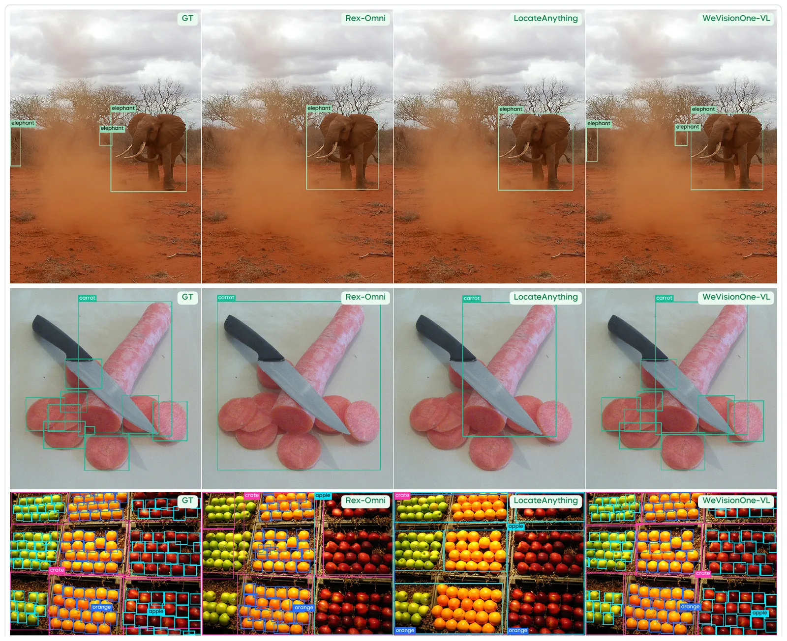
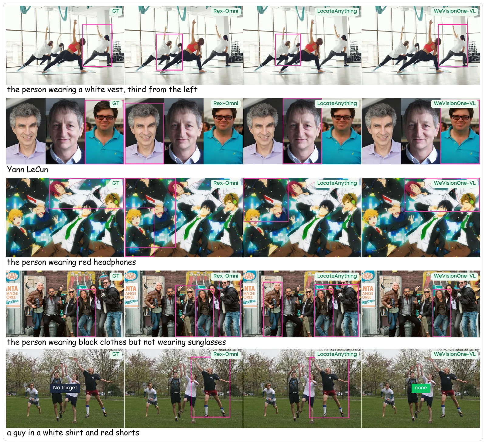
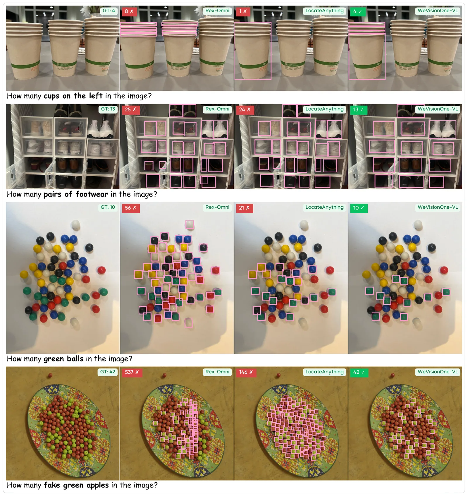
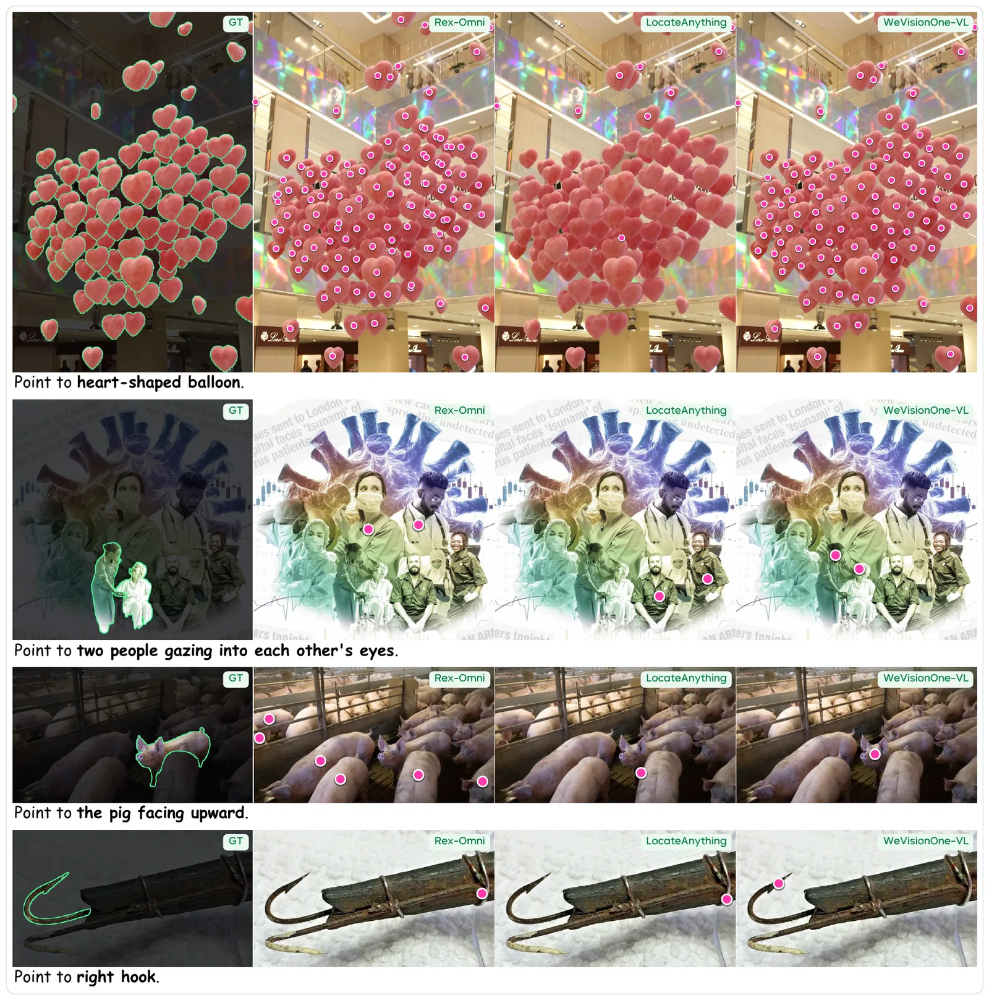
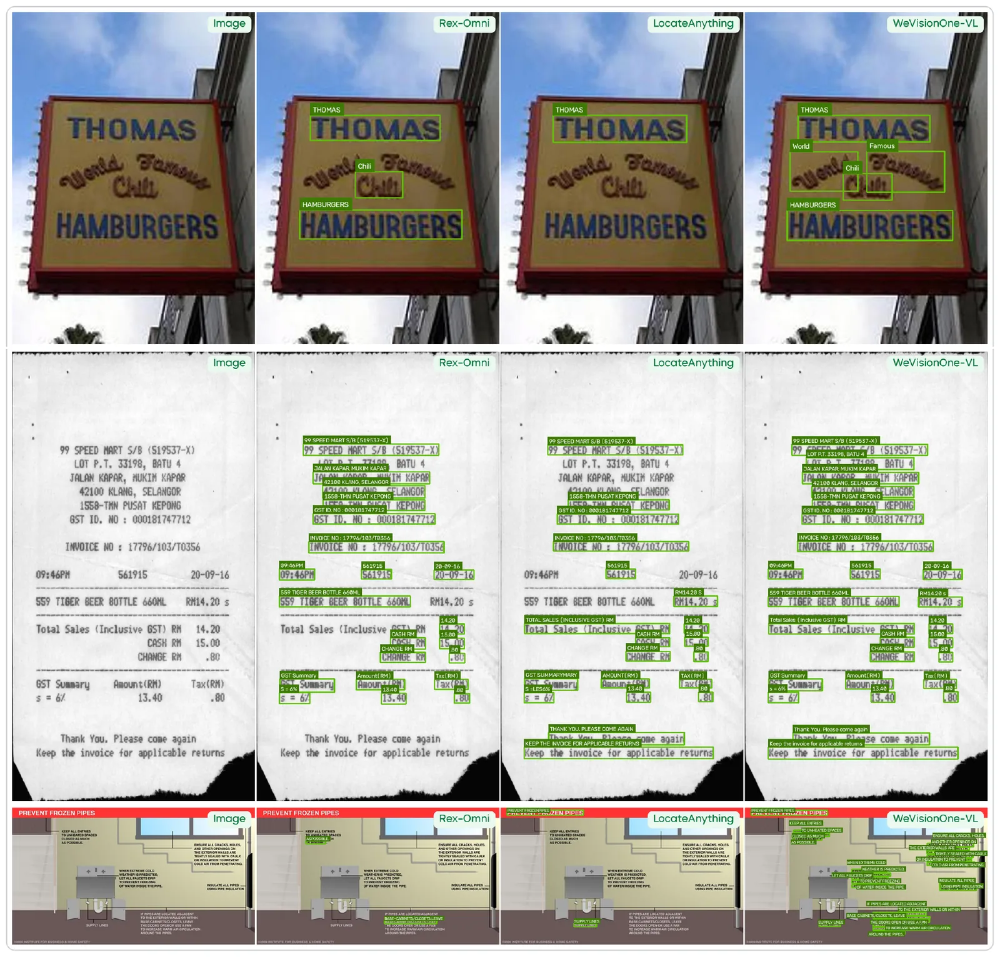
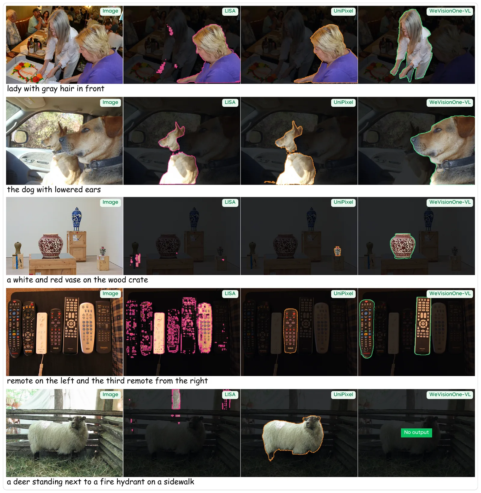
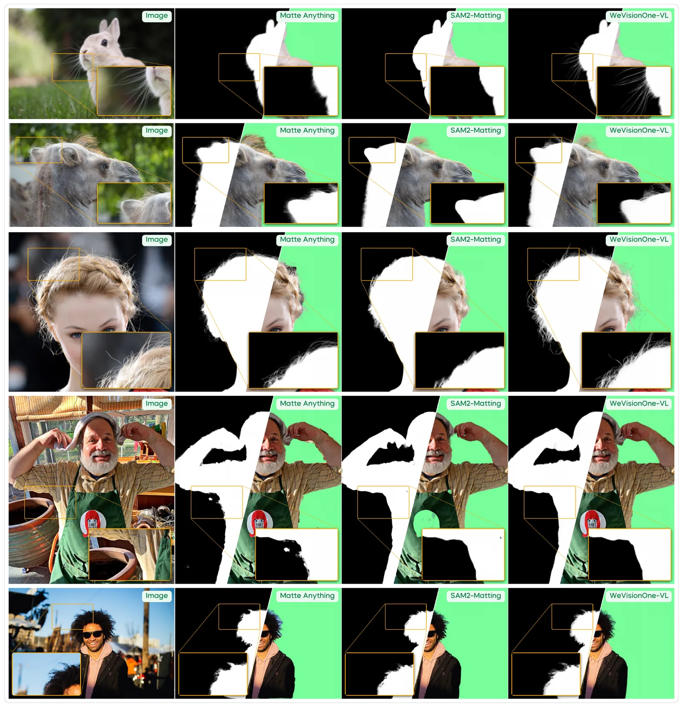
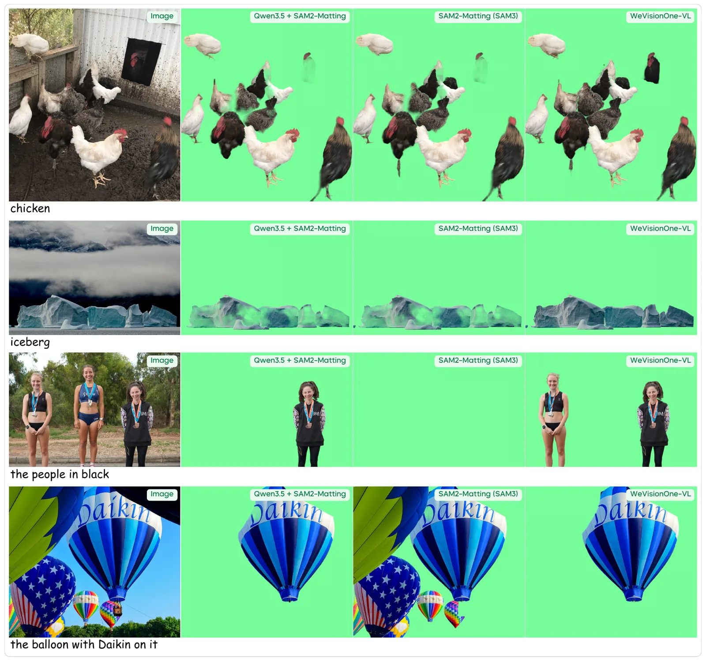
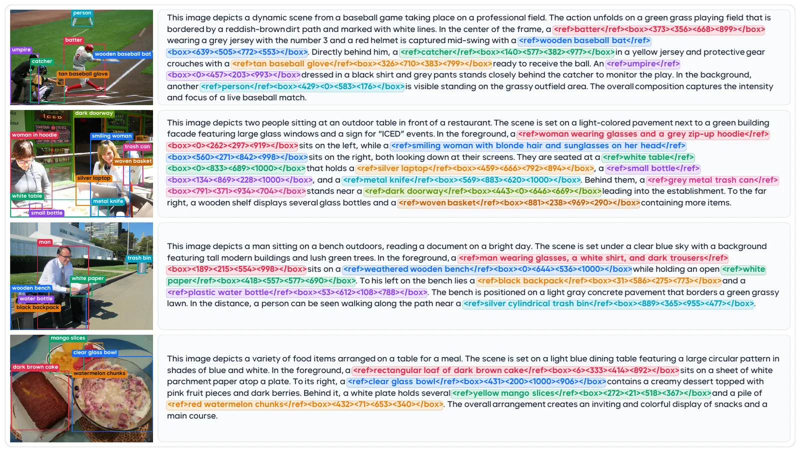
视觉定位。开放词表检测器把定位和类别名、指代表达对齐；之后的定位型多模态模型把空间输出放进语言接口：Kosmos-2 用位置 token 表示文字和框的连接，Florence-2 把检测、定位等写成以提示为条件的序列生成，Molmo/PixMo 说明了显式点监督对定位和计数有用。最近 Rex-Omni 用量化坐标 token 加几何感知的 RL 做检测、指代、指点、OCR；LocateAnything 并行解码整个框和点，提高速度和精度。
指代分割。SAM、SAM 2 建立了可提示的掩码预测，SAM 3 扩到概念提示的检测、分割和跟踪。LISA 把生成的分割 token 交给掩码解码器；GLaMM 交错输出文字和定位掩码；GSVA 支持多目标和显式拒答。Text4Seg 把掩码序列化成文字，UniPixel 整合掩码和像素级推理，Sa2VA 把 MLLM 接到 SAM 2，Youtu-VL 在统一自回归监督下训练视觉和语言 token。
实例抠图。MODNet、P3M 专注人像前景；Matte Anything、Matting Anything 用可提示分割引导 alpha；In-Context Matting 用参考图指定前景；SAM2-Matting 给分割跟踪器加抠图组件；MatAnyone 用首帧掩码在视频里传播，MatAnyone 2 用学习的质量评估和更多真实数据提升细节和时间一致性。这里在多物体场景里用框、类别名、指代表达指定目标，预测连续 alpha。
专注基础感知带来几个取舍：通用训练数据有限，通用能力可能比底座差；为推理效率直接输出结构化结果、不做思维链，可能限制复杂推理；只做单轮预测，接入智能体框架、多轮调用工具逐步细化是方向。更大的挑战是真实世界：基准里的提示清楚、规范、无歧义，真实用户的指令常常含糊、犹豫，语境和表达方式的变化会让“找到目标”这种简单任务变难，所以可靠的视觉系统需要强的意图推理。
WeVisOne-VL 用结构化的下一个 token 接口统一目标级和像素级任务：专用坐标 token 编码实例预测，<OBJ> 把每个定位到的实例接到轻量像素解码器上出掩码和 alpha。三阶段监督课程依次建立任务对齐、高分辨率密集感知和像素预测，之后用混合任务 RL 优化完整的定位输出。在评测的基准上，检测平均 F1 和计数准确率超过同规模 VLM，文字定位和指代定位有进步，指代分割和抠图超过评测的基线；定性例子显示它能在拥挤场景里定位单个实例、理解涉及多个物体的表达，并识别目标不存在。
A.1 SFT 数据。表 9 按任务和来源（公开 / WDE）列出三个阶段的数据量。A.2 分割和抠图数据。表 10 列出来源；公开抠图数据集是高分辨率、高质量 alpha；抠图微调时每个 batch 里公开和 WDE 按 1:4 抽。A.3 RL 数据。用 SFT 检查点在 SFT 数据上做 §4 的不确定性筛选，最终 17.8 万条：检测 44.0%、密集检测 20.8%、指代 17.5%、OCR 7.9%、指代分割 5.8%、指点 4.0%。
| 任务 | 来源 | 数据集 | S1 | S2 | S3 |
|---|---|---|---|---|---|
| 检测 | 公开 | Objects365、OpenImages-V6、V3Det、DeepFashion2、ODinW-35、EgoObjects、PACO、PartImageNet++、BDD100K、nuImages、VisDrone、CrowdHuman、SKU-110K、PartImageNet、MOT20Det、MOT17Det、OWDOD、FSCD-147 | 18.4 | 16.2 | 8.4 |
| WDE | CC3M、GRIT、LAION、SA-1B | 42.2 | 10.7 | 7.2 | |
| 指代 | 公开 | RefCOCO、gRefCOCO、Flickr30k、HumanRef-CoT、HumanParts、D3、OpenRef、Unsplash | 6.3 | 2.1 | 1.0 |
| WDE | GRIT、CC3M、LAION | 11.8 | 5.5 | 1.6 | |
| 计数 | 公开 | CLOC、MixCount、KubriCount、PixMo、OWDOD、FSC-147、FSCD-147 | 2.4 | 1.2 | 0.6 |
| 指点 | 公开 | PixMo、Molmo2、CLOC、FSC-147 | 2.8 | 0.9 | 0.4 |
| OCR | 公开 | IDL-OCR、BLIP3-OCR、ArT、COCO-Text、LSVT、TextOCR、ReCTS、HierText、RCTW、ICDAR2015、WildReceipt、SROIE、ICDAR2013 | 2.1 | 0.7 | 0.3 |
| 描述 | 公开 | RefSpatial、Inst-IT、VG-PhraseCut、Flickr30k、COCONut-PanCap、PixMo、LLM-Seg40K、PanCap、Rea2Seg | 2.7 | 0.9 | 0.4 |
| 分割 | 公开 | RefCOCO、RefCOCO+、RefCOCOg、ReVOS、Ref-YouTube-VOS | 0.9 | 0.9 | 1.6 |
| WDE | CC3M、GRIT、LAION、SA-1B | 0.6 | 1.4 | 20.3 | |
| 合计 | 90.2 | 40.5 | 41.8 | ||
| 任务 | 来源 | 数据集 | 规模 |
|---|---|---|---|
| 分割 | 公开 | SA-1B、RefCOCO、RefCOCO+、RefCOCOg、ReVOS、Ref-YouTube-VOS | 171.4 |
| WDE | CC3M、GRIT、LAION | 288.4 | |
| 抠图 | 公开 | AM-2K、Distinctions-646、UHRIM、HHM-50K、IHIM-50K、RefMatte、AIM-500、CelebA-Hair、Transparent-460、SIMD、P3M-10K（train）、Real-Human、RealWorldPortrait-636 | 0.3 |
| WDE | CC3M、SA-1B | 129.8 |
B.1 训练超参。SFT 用 128 张 GPU，RL 用 160 张。四种配置都是 AdamW（权重衰减 0.01）、梯度范数上限 1.0、BF16。SFT 用余弦衰减，RL 视配置用常数或余弦。SFT 做序列打包，batch 按每卡 token 数给。阶段 2、3 的 OCR 样本用 16–256 个视觉 token，给长转写留空间。
| 超参 | SFT-S1 | SFT-S2 | SFT-S3 | RL |
|---|---|---|---|---|
| 可训模块 | LLM | VLM | VLM + 解码器 | LLM |
| 学习率：LLM | 2×10⁻⁵ | 5×10⁻⁶ | 5×10⁻⁶ | 1×10⁻⁶ |
| 学习率：视觉编码器 | – | 5×10⁻⁷ | 5×10⁻⁶ | – |
| 学习率：投影 | – | 5×10⁻⁶ | 5×10⁻⁶ | – |
| 学习率：像素解码器 | – | – | 1×10⁻⁵ | – |
| warmup 比例 | 5% | 5% | 3% | – |
| 训练步数 | 13,000 | 8,995 | 9,062 | 593 |
| 最大序列长度 | 4,096 | 8,192 | 8,192 | 4,096 + 4,096 |
| 每图视觉 token | 16–512 | 64–1,960 | 64–1,960 | 64–1,960 |
| 每卡 token 预算 | 28,672 | 24,576 | 24,576 | 24,576 |
| 分布式 | ZeRO-2 | ZeRO-2 | ZeRO-2 | FSDP2 + vLLM |
表注：VLM 指视觉编码器、投影和 LLM。SFT-S3 的 LLM 用 LoRA（r = 128，α = 256，dropout 0.05），token 嵌入和输出头全量可训；其他模块全量可训。RL 的提示和回复最长都是 4,096 token。
B.2 像素解码器训练。warm-up：阶段 2 之后，VLM 接随机初始化的解码器，用分割监督联合训 100,000 步；解码器学习率 1×10⁻⁶，1,000 步 warmup；输出 512×512 掩码。之后只保留解码器和 <OBJ> 嵌入，接回原阶段 2 检查点。联合训练：阶段 3 按 1:1 交替 NTP 步和分割步；VLM、解码器学习率 5×10⁻⁶、1×10⁻⁵，3% warmup；每张卡每个打包序列随机抽 24 个 <OBJ> 送解码器，文本序列完整保留给 NTP。抠图微调：训练全部完成后冻结 VLM，在 1024×1024 输出分辨率上微调解码器 100,000 步；解码器学习率 5×10⁻⁷，由粗到细分支 2.5×10⁻⁶，200 步 warmup，每卡最多 8 个 <OBJ>。warm-up 和抠图两段都是 AdamW、余弦衰减、权重衰减 0.05、梯度范数上限 5.0、BF16、DDP，每卡 token 预算 98,304，最大序列 8,192，每图 16–1,024 个视觉 token。
B.3 RL 奖励。检测、密集检测、指代定位用式 (13)；分割和抠图也只用框的奖励；指点通过“点在掩码内”做一对一匹配算 F1；指代分割要求每个预测框后跟 <OBJ>；OCR 用转写奖励（论文没给公式）；目标不存在时，只有不预测任何物体才得 1。
Hugging Face API 报 model.safetensors 的参数：WeVisOne-VL-2B 2,441,744,384，4B 4,830,581,248（BF16）。对应的 Qwen3-VL-2B/4B-Instruct 是 2,127,532,032 和 4,437,815,808。差值正好能解释：
tie_word_embeddings 是 true（输出头和词嵌入共用），WeVisOne-VL 的 config 是 false，多出一个独立输出头；词表也从 151,936 扩到 152,680（多 744 行）。这和表 11 “token 嵌入和输出头全量可训”一致；论文没说解开了权重共享。所以“2B”实际 2.44B、“4B”实际 4.83B（不含 9.6M 解码器）。新 token 实际只有 1010 个（读者注 3），词表大小 152,680 是对齐填充后的值。
结论先说：仓库只给推理和评测：推理包 wevisone_vl、三本 Cookbook、评测管线、Gradio demo、检查点校验脚本和测试。训练代码（SFT、解码器 warm-up、抠图微调、RL）和数据引擎都没有公开，README 的 TODO 里 “Fine-tuning code” 未勾选。数据引擎里的抠图标注器单独放在 mask2alpha 分支。
代码版本：9a6bcd8（2026-10-25），Apache-2.0（README 说“腾讯编写的代码”按 Apache-2.0，第三方组件保留原许可）。包名 wevisone-vl 1.0.0，Python ≥ 3.10，固定 torch 2.11.0、transformers 5.12.1，可选 vllm 0.23.0、gradio 6.30.0。
| 部分 | 文件 | 内容 |
|---|---|---|
| 推理引擎 | wevisone_vl/engine.py | WeVisOneVL：加载 Qwen3-VL（transformers，可选 vLLM 生成）和 mask_decoder.pt；predict() 生成文本，回复里有 <OBJ> 就调 decode_masks() |
| 像素解码器 | mask_decoder.py、msda.py、config.py、decoder.py | 适配器、可变形查询解码器（纯 PyTorch 的 grid_sample 实现，不需要 CUDA 扩展）、像素融合、动态掩码头、三级精修 |
| 特征桥 | feature_bridge.py | 在 Qwen3-VL 的合并器前截 ViT 第 5/11/17/23 层，还原 patch 顺序；hook 最后一个 LLM 层取 <OBJ> 隐状态；视频输入直接报错 |
| 提示词 | prompts.py | 11 个任务名：detection、referring、point、count_box、count_point、segmentation、matting、ocr、ocr_grounding、visual_prompt、freeform |
| 命令行 / 可视化 | cli.py（命令 wevisone-vl）、visualization.py | save_result 写 response.txt、result.json、叠加图和 masks/mask_000.png 等 |
| Cookbook | tutorials/01–03_*.ipynb | 目标级（检测、指代、计数、指点）、OCR、像素级（分割、抠图） |
| 评测 | evaluation/ | vLLM 跑框和点任务，transformers + 解码器跑指代分割和抠图；指标脚本；prepare/ 下的数据转换 |
| demo | demo/app.py | Gradio，本地 python demo/app.py --model tencent/WeVisOne-VL-4B，可选 vLLM |
| 发布脚本 | scripts/verify_checkpoint.py、stage_release_checkpoint.py | 校验检查点文件集合、解码器 cfg、参数个数、<OBJ> id（见读者注 4） |
权重。Hugging Face tencent/WeVisOne-VL-2B、-4B，Apache-2.0，不需要申请（API 的 gated 是 False；2026-11-17 查）。每个仓库有 model.safetensors（2B 4.88 GB，4B 9.66 GB，BF16）、mask_decoder.pt（38.1 MB / 38.5 MB，fp32）、分词器和配置。WeVisOneVL("tencent/WeVisOne-VL-4B") 会自动下载，也可以给本地目录。模型的 generation_config.json 默认 do_sample: true、温度 0.7，但推理包在 temperature=0（默认）时会关掉采样。
输出怎么读。
[x1,y1,x2,y2]，点 [x,y]。目标不存在时回复里是 None。predict() 只要在回复里搜到 <OBJ> 就解码，与任务名无关。解码时把“提示 + 已生成的回复”整段再前向一遍（teacher forcing），在这次前向里截 ViT 特征和 <OBJ> 隐状态；所以像素任务要跑两次 VLM。每 16 个 <OBJ> 一批送解码器（decoder_batch_size）。result.masks 是列表，每个 <OBJ> 一个 float32 数组 [H, W]（原图尺寸），值是 sigmoid 后的 [0, 1]；它由 1024×1024 的 S/1 输出双线性缩放回原图。分割和抠图拿到的是同一种东西：要二值掩码就取 ≥ 0.5（评测脚本就这么做，多实例再按像素取最大）。result.boxes 是带 <OBJ> 的那些框（归一化 xyxy）。min_pixels = 16×32×32、max_pixels = 2025×32×32，即 16 到 2,025 个合并后 token；论文写的是最多 1,960（读者注 12）。gpu_memory_utilization=0.45 的原因（我的推断）。复现论文表格。evaluation/README.md 给了数据下载和命令：COCO、LVIS、Dense200、VisDrone、RefCOCOg、HumanRef、HierText、IC15、TotalText、SROIE 直接用 Rex-Omni-EvalData；其余用 prepare/ 下的脚本从官方来源转换。之后按任务跑 eval_coco.sh、eval_lvis.sh、eval_others.sh、eval_refseg.sh、eval_matting.sh，每个数据集输出 answer.jsonl 和 eval_results.json，一张卡一个副本。能复现的是 WeVisOne-VL 自己那两行：表 2、4、5、6、7 的全部列，表 3 除 WeRef-Bench 外，表 8 除 WeRefMat 外（两个自建集都“not yet released”）。基线的评测脚本没有给。
convert_coco_lvis_to_standard_format.py 注释叫 “positive-only protocol”）。所以检测 F1 不惩罚“对不存在的类别报框”，和常规检测评测不同；评测数据和格式沿用 Rex-Omni-EvalData，基线是否同样测的论文没说。coco_lvis_metric.py）按类别平均精度和召回时跳过非正值（safe_mean 只平均 > 0 的项），会抬高分数；其他框任务（other_metric.py）按样本平均，不按类别。正文说“按类别计算再平均”。max_pixels = 2025×32×32（≤ 2,025 个 token），抠图用 1024×1024（≤ 1,024 个 token）；论文 §5 说统一 ≤ 1,960。repetition_penalty=1.05；分割和抠图是 1.0。README 的 “Performance at a Glance” 是 4B 对“每个基准最强的公开基线”。逐项对照表 2–8：
| README 行 | 最强基线 / 4B | 论文出处 | 结论 |
|---|---|---|---|
| LVIS F1 Mean | 50.7 / 55.3 | 表 2：LocateAnything 50.7，4B 55.3 | 对 |
| Dense200 F1 Mean | 58.7 / 71.3 | 表 2：LocateAnything 58.7 | 对 |
| RefCOCOg test F1 Mean | 77.6 / 81.8 | 表 3：LocateAnything 77.6 | 对 |
| WeRef-Bench 拒答率 | 73.0 / 96.4 | 表 3：LocateAnything 73.0 | 对 |
| PixMo-Count test Acc | 82.8 / 89.6 | 表 4：LocateAnything 82.8（Qwen3.5-9B 80.4） | 对 |
| PointBench “Acc” | 69.9 / 71.9 | 表 5：Rex-Omni 69.9 | 数对；但指标是 F1@Point，不是准确率 |
| TotalText F1 Mean | 43.3 / 52.0 | 表 6：LocateAnything 43.3 | 对 |
| ReasonSeg val gIoU | 65.0 / 71.2 | 表 7：LISA-13B (ft) 65.0 | 对 |
| P3M-500-NP 框提示 MAD | 15.4 / 7.3 | 表 8：SAM2-Matting (SAM3) 15.4 | 对；这一列 2B 的 6.6 更好 |
| WeRefMat 指代 MAD | 22.4 / 9.8 | 表 8：Qwen3.5-9B + SAM2-Matting 22.4 | 对 |
README 下面七张可展开的完整表（检测、指代、计数、指点、OCR、指代分割、抠图）我逐格和表 2–8 对过（前六张用脚本从 PDF 文本比对，抠图表手对），共 196 个数，全部一致；上面速览表的 20 个数也都对。只有两处需要注意：
另外，README 和模型卡里的 “9.6M-parameter” 对 4B 准确，2B 是 9.5M（读者注 4）。
以下各条都是本页加的核算或对照，不属于论文内容。点编号跳到对应位置。
论文没写、我也没找到的：OCR 转写奖励的公式；\(\mathcal L_{\rm hard}\) 的定义；GRPO 的 KL、裁剪等超参；自研 OV 检测器的结构和规模；知识图谱的规模；人工抽检的比例；抠图微调和 RL 的先后。
文中提到的数据集、模型和工具。除注明的以外，链接在 2026 年 11 月 17 日用脚本核对都返回 200，arXiv 编号核对过标题。
| 名称 | 是什么 | 主页 | 论文 |
|---|---|---|---|
| WeVisOne-VL | 本文 | 项目页 · HF | 2610.31329 |
| Qwen3-VL | 底座 VLM | github.com/QwenLM/Qwen3-VL | 2511.21631 |
| Rex-Omni | 基线；坐标 token 和 Dense200 的来源 | github.com/IDEA-Research/Rex-Omni | 2510.12798 |
| LocateAnything | 基线，并行解码框 | – | 2605.27365 |
| Grounding DINO | 专用检测基线 | github.com/IDEA-Research/GroundingDINO | 2303.05499 |
| SAM 3 / SAM 2 / SAM | 数据引擎的候选和掩码；抠图基线的底座 | github.com/facebookresearch | 2511.16719 · 2408.00714 · 2304.02643 |
| Tokenize Anything | 数据引擎的类别发现 | github.com/baaivision/tokenize-anything | 2312.09128 |
| BiRefNet | 抠图专家之一 | github.com/ZhengPeng7/BiRefNet | 2401.03407 |
| MatAnyone 2 | 抠图专家之二 | github.com/pq-yang/MatAnyone2 | 2512.11782 |
| SAM2Matting | 抠图基线；标注器的灵感 | – | 2606.27339 |
| Matte Anything | 抠图基线 | github.com/hustvl/Matte-Anything | 2306.04121 |
| Deformable DETR / DINO | 查询解码器 / 自研检测器的结构来源 | github.com/fundamentalvision/Deformable-DETR | 2010.04159 · 2203.03605 |
| GRPO | RL 算法（DeepSeekMath 提出） | – | 2402.03300 |
| PP-OCRv5 | 专用 OCR 基线 | github.com/PaddlePaddle/PaddleOCR | 2507.05595 |
| LISA · GSVA · LaSagnA · Text4Seg · VRS-HQ · UniPixel · Youtu-VL | 指代分割基线 | – | 2308.00692 · 2312.10103 · 2404.08506 · 2410.09855 · 2501.08549 · 2509.18094 · 2601.19798 |
| COCO · LVIS | 检测（零样本） | cocodataset.org · lvisdataset.org | 1405.0312 · 1908.03195 |
| Dense200 · VisDrone | 密集 / 小目标检测 | Rex-Omni-EvalData · github.com/VisDrone | 2510.12798 · ICCVW 2019 |
| RefCOCO / RefCOCO+ / RefCOCOg | 指代检测和分割 | github.com/lichengunc/refer | 1608.00272 · 1511.02283 |
| RefCOCOg-Rej | 无目标指代（GroundingME） | – | 2512.17495 |
| HumanRef | 多人指代 | github.com/IDEA-Research/RexSeek | 2503.08507 |
| Ref-Adv · PR-Bench · DVGBench | 指代（对抗、带拒答、无人机） | – | 2602.23898 · 2607.24407 · 2601.00998 |
| Ref-L4 | 指代 | github.com/JierunChen/Ref-L4 | 2406.16866 |
| CountQA · CLOC · KubriCount · MixCount | 计数 | – | 2508.06585 · 2605.30846 · 2605.10887 · 2605.18063 |
| PixMo-Count · PixMo-Points | 计数 / 指点 | huggingface.co/datasets/allenai | 2409.17146 |
| PointBench | 指点（PointArena） | pointarena.github.io | 2505.09990 |
| HierText · TotalText | OCR | github | 2203.15143 · 1710.10400 |
| ICDAR2015 · SROIE | OCR | rrc.cvc.uab.es（脚本访问超时，未核对） | ICDAR 2015 · 2103.10213 |
| ReasonSeg · Ref-ZOM | 推理分割 / 零-一-多目标分割 | github | 2308.00692 · 2308.13853 |
| P3M-500-NP · AM-2K · PPM-100 | 框提示抠图 | github | 2104.14222 · 2010.16188 · 2011.11961 |
| WeRef-Bench · WeRefMat | 自建（2,880 条查询 / 文字提示抠图），未公开 | – | 本文 |
先说结论：输入是一张图 + 一句文字指令；输出是一段带坐标 token 的文字。分割和抠图任务另外再给每个目标一张和原图同尺寸的 0–1 浮点图。出处：§3.1、§3.2，代码 wevisone_vl/prompts.py、engine.py、visualization.py。
输入
freeform）。prompts.py）| 任务 | 指令 |
|---|---|
| 检测 | Locate all the instances that match the following description: person. |
| 指代定位 | Locate the instances that match the following description: … |
| 指点 | point to: traffic lights |
| 计数（框 / 点） | How many cars in the image? Please count them with boxes.，或者不加后半句 |
| 分割 / 抠图 | Locate the instances that match the following description and provide the alpha mattes: … |
| OCR | detect all the word in the box format |
| 文字定位 | Locate the following text in the image: … |
| 视觉提示 | Locate all similar objects in the image based on the reference boxes: 后接用户画的参考框（同样写成坐标 token） |
和图 3 的例句有五处措辞不同（读者注 3）。用推理包时以代码为准。
输出第一层：结构化文字（所有任务）。坐标先归一化到 0–1000 的整数（千分比），写成专门的 token <0>…<1000>：
| 类型 | 例子 | 读法 |
|---|---|---|
| 框 | <ref>person</ref><box><82><105><301><947>, …</box> | 每 4 个数一个框 [x0, y0, x1, y1] |
| 点 | <ref>traffic lights</ref><point><191><526>, …</point> | 每 2 个数一个点 |
| 计数 | 框列表之后加 Total number: 3. | 先列出、再报数 |
| OCR | <ref>Hello</ref><box>…</box> | 识别出的文字放在 ref 里 |
| 目标不存在 | 坐标位置写 None | 拒答，不编框 |
换成像素：\(x = v/1000 \times W\)，\(y = v/1000 \times H\)（visualization.py:parse_predictions）。
输出第二层：像素图（只有分割 / 抠图）。模型在每个框的 4 个坐标后面多生成一个 <OBJ>：
<ref>dogs</ref><box><81><327><394><746><OBJ>,<552><284><902><721><OBJ></box>
回复里出现 <OBJ>，推理包会把整段回复喂回 VLM 再做一次完整前向（teacher forcing），取下面四样东西给 9.6M 参数的像素解码器：
<OBJ> 位置的最后一层隐状态：表示“是哪个目标”；解码器给每个目标输出 logits，经 sigmoid 后双线性插值回原图大小：一张 float32 的 [H, W] 图，值在 0–1。
分割和抠图其实是同一个输出：代码里两者用同一句指令、同一个解码器（公开的是抠图微调后的那个）。要二值掩码就取 ≥ 0.5，要抠图就直接当 alpha 用（读者注 5）。论文没有明说这一点。
Python 接口：predict() 返回 InferenceResult，字段是 response（上面那段原始文字）、boxes（0–1 归一化的框，只取后面跟着 <OBJ> 的）、masks（每个 <OBJ> 一张 [H, W] 图）、latency_s。